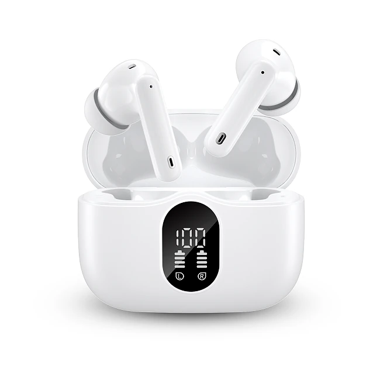
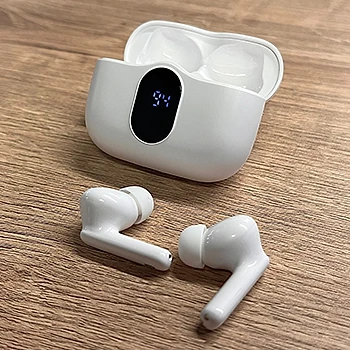

Was ist BeatBuds X1 und wie funktioniert es?
Die BeatBuds X1 sind kabellose In-Ear-Ohrhörer mit einem wiederaufladbaren Ladecase. Laut der offiziellen Website sind sie für einen aktiven Alltag gedacht und sollen unvergleichlichen Komfort mit fesselndem Klang verbinden: Musik und Podcasts beim Arbeiten zu Hause, beim Laufen oder unterwegs, dazu Telefonate über die integrierten Mikrofone.
Die Ohrhörer werden per Bluetooth mit Smartphone, Tablet oder Laptop verbunden. Laut Website funktioniert das mit Android-Geräten, iPhones, Tablets und Laptops: Ohrhörer aus dem Case nehmen, dann schalten sie sich ein, und in den Bluetooth-Einstellungen auswählen. Beim nächsten Mal verbinden sie sich automatisch, ohne dass Sie die Kopplung wiederholen müssen.
Das Ladecase hat eine LCD-Anzeige, die den Akkustand in Prozent zeigt. Zusammen mit dem Case nennt der Hersteller eine Spielzeit von bis zu 18 Stunden. Das Case soll sich magnetisch schließen und dient gleichzeitig als Ladegerät für die Ohrhörer. Laut Website lädt der Akku schnell auf und hält bei normaler Nutzung mehrere Tage durch, bevor das Case wieder an den Strom muss.
Als weitere Merkmale werden HD-Klang mit klaren Höhen und kräftigen Bässen, verstellbare Ohrstöpsel für einen bequemen Sitz, eine Touch-Steuerung, ein KI-Sprachassistent für Musik und Anrufe sowie Wetterbeständigkeit genannt. Auf der Website ist außerdem von einer Technologie zur Lärmreduzierung die Rede, ohne dass genauer erklärt wird, ob es sich um aktive Geräuschunterdrückung handelt.
Zur Einordnung: Bei günstigen kabellosen Ohrhörern sind Begriffe wie „Studioqualität“ und „HD-Klang“ Werbeaussagen. Konkrete Angaben zu Treibergröße, Frequenzbereich, Schutzklasse oder zur Art der Lärmreduzierung macht die Website nicht. Für den Alltag, Sport und Telefonate können solche Ohrhörer trotzdem eine praktische Wahl sein. Laut Website haben sich bereits über 2.000 Kundinnen und Kunden für die BeatBuds X1 entschieden.
BeatBuds X1 Funktionen
Laut der offiziellen Website bieten die BeatBuds X1:
Bluetooth: stabile Verbindung mit Smartphones, Tablets und Laptops, automatisches Wiederverbinden.
Akku: bis zu 18 Stunden Spielzeit mit dem wiederaufladbaren Case.
LCD-Anzeige: zeigt den Ladestand des Cases auf einen Blick.
Passform: ergonomisch geformte, verstellbare Ohrstöpsel für längeres Tragen.
Bedienung: Touch-Steuerung und KI-Sprachassistent für Musik und Anrufe.
Weitere Angaben: wetterbeständig, magnetischer Case-Deckel, Lärmreduzierung.
Laut Produktspezifikation, die auf der Website nur sehr knapp ausfällt, liegt das Gewicht bei 0,13 Kilogramm bei Abmessungen von 11 × 7,5 × 4,5 Zentimetern, was offenbar die Verpackung beschreibt. Bei der Bluetooth-Version widerspricht sich die Website: Oben wird Bluetooth 5.2 genannt, im Text und im Vergleich Bluetooth 5.3.
Auf den Produktbildern sind die Ohrhörer weiß, mit kurzem Stiel und Silikonaufsätzen; das weiße Case hat vorne die Digitalanzeige.
Im Vergleich mit anderen Ohrhörern hebt der Hersteller HD-Klang, Bluetooth 5.3, multifunktionale Touch-Steuerung, lange Akkulaufzeit, den magnetischen Case-Deckel, das Case als Ladegerät und Etui in einem sowie die Lärmreduzierung hervor. Konkrete Konkurrenzmodelle nennt dieser Vergleich nicht, er ist eine Herstellerangabe.
BeatBuds X1 Anwendung
Laut den häufig gestellten Fragen ist die Kopplung einfach: Ohrhörer aus dem Case nehmen, damit sie sich einschalten, dann in den Bluetooth-Einstellungen des Smartphones, Tablets oder Laptops „BeatBuds X1“ auswählen. Bei der nächsten Benutzung verbinden sie sich automatisch mit dem zuletzt gekoppelten Gerät.
Wählen Sie die Ohrstöpsel-Größe, die am besten abdichtet; das verbessert Sitz und Bass hörbar. Nach der Benutzung legen Sie die Ohrhörer zurück ins Case, wo sie laut Hersteller aufgeladen werden. Die LCD-Anzeige verrät, wann das Case selbst wieder geladen werden muss.
Musik, Anrufe und den Sprachassistenten steuern Sie laut Website über Touch-Gesten an den Ohrhörern oder per Sprachbefehl. Die genaue Belegung der Gesten entnehmen Sie der beiliegenden Anleitung. Laut Website lässt sich das Case unterwegs schnell wieder aufladen, sodass die Ohrhörer für längere Tage einsatzbereit bleiben.
Allgemeine Hinweise: Hören Sie nicht dauerhaft mit hoher Lautstärke, um Ihr Gehör zu schonen. Im Straßenverkehr und beim Laufen an Straßen sollten Sie die Umgebung noch wahrnehmen können. „Wetterbeständig“ bedeutet in der Regel Schutz vor Schweiß und Spritzwasser, nicht vor dem Untertauchen; reinigen Sie die Ohrstöpsel regelmäßig mit einem trockenen, weichen Tuch und lassen Sie die Ohrhörer nach dem Sport trocknen, bevor Sie sie ins Case legen.
BeatBuds X1 – Rückerstattung
Laut der offiziellen Website gilt eine 30-Tage-Geld-zurück-Garantie. Wenn Sie nicht zufrieden sind, können Sie das Paket innerhalb von 30 Tagen zurückschicken; der Hersteller wirbt damit, dass bereits über 2.000 Kunden zufrieden sind.
Die Rückgaberichtlinie des Verkäufers beschreibt den Ablauf genauer. Zuerst wenden Sie sich an den Kundenservice per E-Mail; es gibt eine eigene Adresse für deutschsprachige Kundinnen und Kunden. Geben Sie an, ob Sie einen Ersatz oder eine Erstattung wünschen. Die Ware muss sich im Originalzustand befinden, mit Originalverpackung, und wird an die Adresse geschickt, die der Kundenservice nennt. Für die Erstattung braucht der Verkäufer die Sendungsnummer der Rücksendung. Bei Hygieneartikeln wie In-Ear-Kopfhörern können geöffnete Versiegelungen eine Rolle spielen; klären Sie das vorher mit dem Kundenservice.
Laut den häufig gestellten Fragen dauert die Lieferung in der Regel bis zu zehn Werktage, bei hohem Bestellaufkommen auch länger. Für Verbraucher in der EU gilt zusätzlich das gesetzliche Widerrufsrecht von 14 Tagen, unabhängig von der freiwilligen Garantie.
Verkäufer ist laut Impressum die Label Products B.V. mit Sitz in Helmond in den Niederlanden. Bewahren Sie die Originalverpackung, das Zubehör und Ihre Bestellbestätigung auf, und testen Sie die Ohrhörer nach der Lieferung möglichst bald, damit Sie innerhalb der Frist reagieren können. Nach Ablauf der 30 Tage werden Rücksendungen laut Richtlinie nicht mehr angenommen.
BeatBuds X1 Kundenbewertungen
-
Matt R.Verifizierter Kauf
„Mit meinen BeatBuds X1 kann ich jetzt Musik hören, während ich zu Hause arbeite, wenn ich laufen gehe und um alle meine Podcasts zu hören. Keine Kabel und eine Akkulaufzeit von mehr als einem Tag mit der Hülle machen wirklich einen Unterschied!“
-
Katie T.Verifizierter Kauf
„Nach monatelangem Gebrauch bin ich total verliebt in meine BeatBuds X1! Keine Probleme, tolle Akkulaufzeit, erstaunliche Klangqualität.“
-
Jenna L.Verifizierter Kauf
„Die Audioqualität der BeatBuds X1 ist wirklich gut. Als audiophiler Mensch war ich beim Testen positiv überrascht. Die Lieferung war gut und schnell, insgesamt ein toller Satz Ohrstöpsel.“
BeatBuds X1 – Wo kaufen?
Laut den häufig gestellten Fragen sind die BeatBuds X1 nur online über die offizielle Website erhältlich und nicht im Geschäft. Auf der Bestellseite finden Sie die Eigenschaften, einen Vergleich, die Kundenbewertungen, die häufig gestellten Fragen und die Angebote.
Kabellose Ohrhörer mit LCD-Ladecase in dieser Bauform werden von sehr vielen Anbietern verkauft, oft unter wechselnden Namen und mit sehr ähnlichem Aussehen. Bei Angeboten auf Marktplätzen ist nicht sicher, ob es sich um dasselbe Modell handelt, und die 30-Tage-Garantie des Verkäufers gilt dort in der Regel nicht.
Achten Sie beim Kauf genau auf die Adresse: Der Link auf dieser Seite führt zu buy-white-beatbudsx1.com, während die häufig gestellten Fragen eine andere Adresse nennen. Die Seite arbeitet zudem mit Hinweisen auf knappe Lagerbestände und zeitlich begrenzte Angebote; lassen Sie sich davon nicht drängen und prüfen Sie die Bestellübersicht genau. Links zu Impressum, Rückgabe und Widerruf stehen im Fußbereich der Seite; laut Website wird die Bestellung nach Abschluss sofort verpackt und versendet.
Um sicherzugehen, dass Sie das Originalprodukt erhalten, besuchen die meisten Nutzer die offizielle Website.
Ist BeatBuds X1 Betrug?
Nach den verfügbaren Informationen gibt es keinen Hinweis darauf, dass die BeatBuds X1 Betrug sind. Die Ohrhörer werden über eine eigene Bestellseite mit Funktionsbeschreibung, Kundenbewertungen, häufig gestellten Fragen, Rückgaberichtlinie und Impressum verkauft. Verkäufer ist laut Impressum die Label Products B.V. aus Helmond in den Niederlanden, mit Handelsregisternummer und Umsatzsteuer-Identifikationsnummer.
Positiv sind die 30-tägige Geld-zurück-Garantie, die einfache Bedienung, der deutschsprachige Kundenservice per E-Mail und die nachvollziehbare Beschreibung der Kopplung.
Es gibt aber Punkte, die Aufmerksamkeit verdienen. Die Website widerspricht sich bei der Bluetooth-Version, nennt in den häufig gestellten Fragen eine andere Domain und wiederholt dieselbe Frage zum Versand mehrfach. Technische Daten zum Klang fehlen, und Aussagen wie „Studioqualität“ sind Werbung. Auch die Angabe von über 2.000 Kunden lässt sich nicht überprüfen. Eine Kundin erwähnt Reparaturkosten in Dollar, was auf eine übersetzte Seite hindeutet.
Vorsicht ist außerdem bei Angeboten außerhalb der offiziellen Website geboten, denn dort gilt die Garantie des Verkäufers in der Regel nicht, und bei sehr ähnlichen Produkten ist unklar, wer der Verkäufer ist.
Wie bei jedem günstigen Ohrhörer sollten Sie realistische Erwartungen an Klang, Lärmreduzierung und Akkulaufzeit haben. Wer die Bedingungen kennt und direkt auf der offiziellen Website bestellt, geht nach heutigem Stand kein besonderes Risiko ein.
Wer Produktdetails überprüfen oder die aktuelle Verfügbarkeit prüfen möchte, ist auf der offiziellen BeatBuds X1-Website am sichersten aufgehoben.
